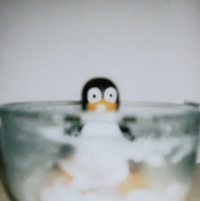

About Me

I am in my third year of computer science at the University of Alberta.
I want to build useful and convenient software applications that can benefit our lives.
I value continuous learning.
I love seeing applications coming to life.
Aside from technology I have a strong passion for visual arts, specifically into realism and figure drawing and painting.
Experience
I have volunteered as a junior software developer @ Ada's Team's subsidiary, Ada's Developers program, in 2020.
This year I participated in the Virual Grace Hopper Celebration where I had a chance to collaborate with powerful women in technology on the Open Source Day.
I have a passion for open source projects. In the past I have worked on developing game AIs, bots for Slack and Discord, as well as mobile application.
Currently, I am learning frondend web development and some computer network related topics.
Achievements
Skills
Proficient: Python, C, Git, Linux
Familiar: Java, C++, SQL, JavaScript, MATLAB, NumPy, MongoDB, Agile (Scrum), Android Mobile App Development, Firebase
Relevant courses taken
- Algorithms & Data Structure
- File and Database Management
- Foundations of Computation
- Practical Programming Methodology
- Digital Image Processing
- Games Puzzles Algorithms
- Introduction to Software Engineering
- 3D Modeling and Animation
Projects
- Chess Program
- Created a chess engine from scratch that supports human vs human, human vs AI, and AI vs AI, with terminal GUI.
- Human vs human and AI making random moves vs human or AI have been implemented.
- Greedy AI and Minimax AI are currently under development.
- Developed with C.
- Old School RuneScape Automation
- Created this bot to automate repetitive tasks in the game. Automated features include attacking certain NPCs for automatic
combat training and mining.
- Developed with Python.
- Experiment Logger - WiseTrack
- Worked within a team of 6 with Agile and Scrum to develop an android application to crowdsource data from participants
following MVC architecture.
- Used Figma to design front-end and UML diagrams to structure the application backbone that supported user stories.
- Used CRUD operations to manipulate data from Android Studio to Google Firebase.
- Developed with Java.